농업기계기사 (2003-08-31 기출문제)
1과목: 재료역학
1. 길이가 ℓ 이고 단면적이 A인 봉의 상단은 고정되어 있고 하단에는 P의 하중이 작용하고 있을 때 자중이 W이고 탄성계수가 E라면 신장량을 구하는 식은?
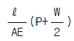
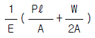
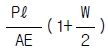
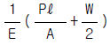
(정답률: 알수없음)

2. 변형율 성분이 εx= 900x10-6, εy= -100x10-6, γxy=600x10-6 일 때 면내 최대 전단변형률의 값은?
- 400x10-6
- 583x10-6
- 983x10-6
- 1166x10-6
(정답률: 알수없음)
3. 그림과 같은 길이 3m의 양단 고정보가 그 중앙점에 집중하중 10kN을 받는다면 중앙점에서의 굽힘 응력은?
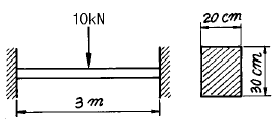
- 15.2 MPa
- 1.25 MPa
- 12.5 MPa
- 1.52 MPa
(정답률: 알수없음)
4. 그림과 같이 반원부재에 하중 P가 작용할 때 지지점 B에서의 반력은?
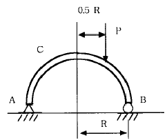
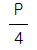
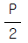
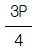
(정답률: 알수없음)
5. 원형 단면의 단면 2차모멘트 I와 극단면 2차모멘트 Jp의 관계를 올바르게 나타낸 것은?
- I = 2Jp
- I = Jp
- Jp = 2I
- Jp = 4I
(정답률: 알수없음)
6. 그림과 같이 두가지 재료로 된 봉이 하중 P를 받으면서 강체로 된 보를 수평으로 유지시키고 있다. 강봉에 작용하는 응력이 150 MPa일 때 알루미늄봉에 작용하는 응력은 몇 MPa 인가?(단, 강과 알루미늄의 탄성계수의 비 Es / Ea = 3 이다.)
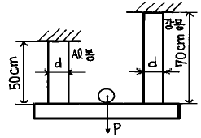
- 555
- 875
- 70
- 270
(정답률: 알수없음)
7. 같은 전단력이 작용할 때 원형단면보의 지름을 3배로 하면 최대 전단응력은 몇 배가 되는가?
- 9배
- 3배
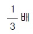
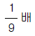
(정답률: 알수없음)
8. 길이가 같고 모양이 다른 두 개의 둥근 봉이 있다. 두 봉에 같은 하중 P가 작용할 때 봉 속에 저장되는 변형 에너지의 비의 값 ( U2/ U1 )를 구하면 ? (단, 재료는 선형탄성거동을 한다고 가정한다.)
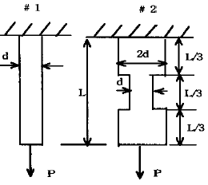
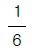
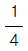
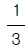
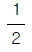
(정답률: 알수없음)
9. 그림과 같이 외팔보에 균일 분포 하중이 작용한다. 고정단에서의 굽힘 모멘트는 몇 N.m 인가?
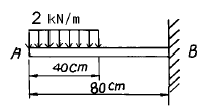
- 440
- 840
- 480
- 460
(정답률: 알수없음)
10. 강의 나사봉이 기온 27℃에서 24 MPa의 인장응력을 받고 있는 상태에서 고정하여 놓고 기온을 7℃로 하강시키면 발생하는 응력은 모두 몇 MPa 인가?(단, 재료의 탄성 계수 E = 210 GPa, 선팽창계수 α= 11.3x10-6 /℃이다.)
- 47.46
- 23.46
- 40.66
- 71.46
(정답률: 알수없음)
11. 단면치수에 비해 길이가 큰 길이 L 인 기둥 AB가 그림과 같이 한쪽 끝 A에서 고정되고, B의 도심에 작용하는 압축하중 P를 받을 때 오일러식에 의한 임계하중(Pcr)은? (단, E는 탄성계수, I는 단면 2차 모멘트이다.)
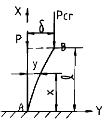
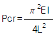
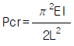
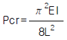
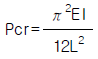
(정답률: 알수없음)
12. 높이 h, 폭 b인 직사각형 단면을 가진 보와 높이 b, 폭 h인 단면을 가진 보의 단면 2차 모멘트의 비는? (단, h = 1.5 b)
- 1.5:1
- 2.25:1
- 3.375:1
- 5.06:1
(정답률: 알수없음)
13. 길이 3m이고 지름이 16mm인 원형단면봉에 30kN의 축하중을 작용시켰을 때 탄성신장량 2.2mm가 생겼다. 이 재료의 탄성계수는 몇 GPa 인가?
- 2.03
- 203
- 1.36
- 136
(정답률: 알수없음)
14. 코일 스프링의 소선의 지름을 d, 코일의 평균지름을 D, 코일 전체의 길이가 L인 경우 인장하중 W를 작용시킬 때 전체의 처짐량을 나타내는 식은 어느 것인가? (단, G는 전단탄성계수이고, n은 코일의 감김수이다.)
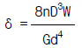
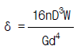
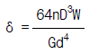
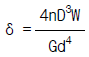
(정답률: 알수없음)
15. 그림의 단순지지보에서 중앙에 집중하중 P(=ωℓ)가 작용할 때와 등분포하중이 작용할 때 중앙에서 처짐 yA:yB의 값은?
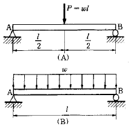
- 4 : 3
- 3 : 4
- 7 : 4
- 8 : 5
(정답률: 알수없음)
16. 안지름 400 mm , 내압 8 MPa 인 고압가스 용기의 뚜껑을 8 개의 볼트로 같은 간격으로 조일때 각 볼트의 지름은 최소 몇 mm 로 해야 하는가? (단, 볼트의 허용인장응력은 45 MPa로 한다)
- 20
- 40
- 80
- 60
(정답률: 알수없음)
17. 수직응력에 의한 탄성에너지에 대한 설명 중 맞는 것은?
- 응력의 자승에 비례하고, 탄성계수에 반비례한다.
- 응력의 3승에 비례하고, 탄성계수에 비례한다.
- 응력에 비례하고, 탄성계수에도 비례한다.
- 응력에 반비례하고, 탄성계수에 비례한다.
(정답률: 알수없음)
18. 그림과 같은 4각형 단면의 도심 G를 지나는 xc축, yc축, 밑변을 지나는 xb축, yb축에 대한 각각의 단면2차모멘트를 Ixc, Iyc, Ixb, Iyb 라고 할 때, 가장 큰 것은?
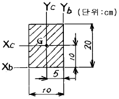
- Iyc
- Iyb
- Ixc
- Ixb
(정답률: 알수없음)
19. 다음과 같은 외팔보에서의 최대 처짐량은?
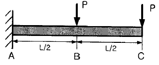
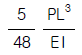
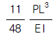
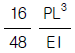
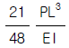
(정답률: 알수없음)
20. 길이가 L인 단순보 AB 의 한 끝에 우력 M이 작용하고 있을 때 이 보의 A단에서의 기울기 θA는?
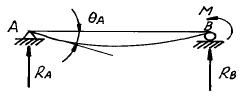
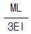
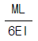
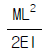
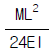
(정답률: 알수없음)
2과목: 기계열역학
21. 랭킨 사이클(Rankine cycle)에서 5 MPa, 500℃의 증기가 터빈 안에서 5 kPa 까지 단열팽창할 때 이 사이클의 펌프일은 약 몇 kJ/kg 인가? (단, 물의 비체적은 0.001m3/㎏ 이다.)
- 50 kJ/kg
- 5 kJ/kg
- 10 kJ/kg
- 20 kJ/kg
(정답률: 알수없음)
22. 50℃에 있는 물 1 ㎏ 과 20℃에 있는 물 2 ㎏ 을 일정 압력하에서 단열혼합시켜 물의 온도가 30℃가 되었다. 물의 정압비열은 Cp = 4.2 kJ/kg.K로서 항상 일정하다고 할 때 이 혼합 과정의 전 엔트로피 변화는 몇 kJ/K 인가?
- 0.0282
- 0.0134
- -268.4
- 281.8
(정답률: 알수없음)
23. 비열이 일정한 이상기계가 노즐 내를 등엔트로피 팽창할 때의 임계압력 PS를 옳게 나타낸 식은? (단, P1= 정체압력(stagnation pressure), k=비열비 이다.)
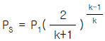
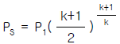
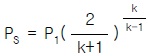
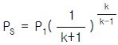
(정답률: 알수없음)
24. 산소 3kg과 질소 2kg이 혼합되어서 체적 2m3의 용기 내에 온도가 80℃의 상태로 있을 때, 용기 내의 압력은 다음중 어느 것에 가장 가까운가? (단, 산소와 질소는 완전 기체로 취급하고 산소와 질소의 기체상수는 각각 0.2598 kJ/kg.K, 0.2969 kJ/kg.K이다.)
- 54.9 kPa
- 109.8 kPa
- 121.5 kPa
- 242.3 kPa
(정답률: 알수없음)
25. 열역학 제 1법칙은 다음의 어떤 과정에서 성립하는가?
- 가역과정에서만 성립한다.
- 비가역 과정에서만 성립한다.
- 가역 등온 과정에서만 성립한다.
- 가역이나 비가역 과정을 막론하고 성립한다.
(정답률: 알수없음)
26. 100℃의 수증기 10㎏이 100℃의 물로 응축 되었다. 수증기의 엔트로피 변화량은 몇 kJ/K인가? (단, 물의 잠열은 2257 kJ/kg 이다.)
- 14.5
- 5390
- -22570
- -60.5
(정답률: 알수없음)
27. 천제연 폭포수의 높이가 55 m일 때 폭포수가 낙하한 후 수면에 도달할 때까지 주위와 열교환을 무시한다면 온도 상승은 몇 ℃인가? (단, 폭포수의 정압비열은 4.2 kJ/kg℃ 이다.)
- 0.87
- 0.31
- 0.13
- 0.78
(정답률: 알수없음)
28. 이상기체의 가역과정에서 등온과정의 전열량(Q)은?
- 0 이다.
- 무한대이다.
- 비유동과정의 일과 같다.
- 엔트로피 변화와 같다.
(정답률: 알수없음)
29. 계가 비가역 사이클을 이룰 때 클라우지우스(Clausius)의 적분은?
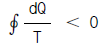
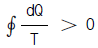
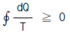
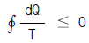
(정답률: 알수없음)
30. 절대압력이 50 N/cm2 이고 온도가 135℃인 암모니아 가스의 비체적이 0.4 m3/㎏ 이라면 암모니아의 기체상수 R은?
- 약 270 J/kg.K
- 약 340 J/kg.K
- 약 430 J/kg.K
- 약 490 J/kg.K
(정답률: 알수없음)
31. 저온 열원의 온도가 TL, 고온 열원의 온도가 TH인 두 열원 사이에서 작동하는 이상적인 냉동 사이클의 성능계수를 향상시키려면?
- TL을 올린다. 그리고 TH를 올린다.
- TL을 올린다. 그리고 TH를 내린다.
- TL을 내린다. 그리고 TH를 올린다.
- TL을 내린다. 그리고 TH를 내린다.
(정답률: 알수없음)
32. 열기관 중 카르노(Carnot)사이클은 어떠한 가역변화로 구성되며, 그 변화의 순서는?
- 등온팽창 - 단열팽창 - 등온압축 - 단열압축
- 등온팽창 - 단열압축 - 단열팽창 - 등온압축
- 등온팽창 - 등온압축 - 단열압축 - 단열팽창
- 등온팽창 - 단열팽창 - 단열압축 - 등온압축
(정답률: 알수없음)
33. S + O2 → SO2 에서 반응물은?
- S나 O2또는 SO2 중의 하나를 말한다.
- S나 O2 및 SO2를 전부 말한다.
- S나 O2 를 말한다.
- SO2를 말한다.
(정답률: 알수없음)
34. 압력 1 N/cm2, 체적 0.5m3 인 기체 1kg을 가역적으로 압축하여 압력이 2N/cm2, 체적이 0.3m3로 변화되었다. 이 과정이 압력 - 체적(P-V)선도에서 직선적으로 나타났다면 필요한 일의 양은?
- 2000 N.m
- 3000 N.m
- 4000 N.m
- 5000 N.m
(정답률: 알수없음)
35. 오토사이클에서 압축시작점의 상태가 0.1MPa, 40℃ 이고, 압축끝점의 온도와 최고온도는 각각 447℃와 3232K 이다. 이 사이클의 효율은?
- 43.5 %
- 56.5 %
- 77.7 %
- 91.1 %
(정답률: 알수없음)
36. 0.6 MPa, 200℃의 수증기가 50 m/s의 속도로 단열된 노즐로 들어가서 0.15 MPa의 포화수증기로 분사된다. 노즐 출구에서 수증기 속도는 얼마인가? (단, 노즐 입구 조건에서 수증기의 단위 질량당 내부에너지는 2638.9 kJ/kg, 엔탈피는 2850.1 kJ/kg이고, 출구 조건에서 수증기의 단위질량당 내부에너지는 2519.6 kJ/kg, 엔탈피는 2693.5kJ/kg 이다.)
- 53 m/s
- 49 m/s
- 562 m/s
- 591 m/s
(정답률: 알수없음)
37. 전류 25A, 전압 13V를 가하여 축전지를 충전하고 있다. 충전하는 동안 축전지로부터 15W의 열손실이 있다. 축전지의 내부에너지는 어떤 비율로 변하는가?
- +310 J/s
- -310 J/s
- +340 J/s
- -340 J/s
(정답률: 알수없음)
38. 증기압축 냉동사이클을 구성하고 있는 다음의 기기들 중에서 냉매의 엔탈피가 거의 일정하게 유지되는 것은?
- 압축기
- 응축기
- 증발기
- 팽창밸브
(정답률: 알수없음)
39. 수증기를 이상기체로 볼 때 정압비열(kJ/kg.K) 값은? (단, 수증기의 기체상수 = 0.462 kJ/kg.K, 비열비 = 1.33이다.)
- 1.86
- 0.44
- 1.54
- 0.64
(정답률: 알수없음)
40. 다음 동력사이클에서 두 개의 정압과정이 포함된 사이클?
- Rankine
- Otto
- Diesel
- Carnot
(정답률: 알수없음)
3과목: 기계유체역학
41. 밀도 ρ, 중력가속도 g, 유속 V, 힘 F에서 얻을 수 있는 무차원수는?
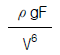
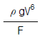
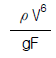
(정답률: 알수없음)
42. 균일유동(uniform flow)이 원통을 지나 흘러갈 때의 유동에 대한 설명으로 옳지 않은 것은?
- 속도가 아주 느릴 때에는 상하류 유동이 대칭이다.
- 유속이 증가함에 따라, 원통의 정점을 지나면서 역압력기울기가 형성되고 유동의 박리(separation)가 생긴다.
- 유동의 박리점 뒤쪽에 형성된 후류(wake)에서는 바깥쪽에 비하여 압력이 낮고 속도도 느리다.
- 층류의 박리점이 난류의 박리점보다 더 뒤쪽에 있다.
(정답률: 알수없음)
43. 직경이 10 cm 인 수평원관으로 3 km 떨어진 곳에 원유(점성계수 μ =0.02 Pa· s, 비중 s=0.86)를 0.2 m3/min의 유량으로 수송하기 위해서 필요한 동력은 몇 W 인가?
- 127
- 271
- 712
- 1270
(정답률: 알수없음)
44. 유체를 연속체(continuum)로 보기가 어려운 경우는?
- 모세혈관 내 혈액
- 매우 높은 고도에서의 대기층
- 헬리콥터 날개 주위의 공기
- 자동차 라디에이터 내 냉각수
(정답률: 알수없음)
45. 다음의 속도장 중에서 연속방정식을 만족시키는 유체의 흐름은 어느 것인가? (단, u 는 x 방향의 속도성분, v 는 y 방향의 속도성분)
- u = 2x2 - y2, v = -2 x y
- u = x2 - y2, v = -4 x y
- u = x2 - y2, v = 2 x y
- u = x2 - y2, v = -2 x y
(정답률: 알수없음)
46. 밑면이 1 m x 1 m, 높이가 0.5 m인 나무토막 위에 1960N의 추를 올려놓고 물에 띄웠다. 나무의 비중을 0.5 라 할때 물속에 잠긴 부분의 부피는 몇 m3 인가?
- 0.5
- 0.45
- 0.25
- 0.⑤
(정답률: 알수없음)
47. 지름 20cm 인 구의 주위에 밀도가 1000kg/m3, 점성계수는 1.8x10-3 Pa.s 인 물이 2m/s의 속도로 흐르고 있다. 항력 계수가 0.2인 경우 구에 작용하는 항력은 약 몇 N 인가?
- 12.6
- 200
- 0.2
- 25.12
(정답률: 알수없음)
48. 실린더 속에 액체가 흐르고 있다. 내벽에서 수직거리 y에서의 속도가 u = 5y - y2 [m/s]일 때 벽면에서의 마찰전단 응력은 몇 N/m2 인가?(단, 액체의 점성계수는 0.0382 N.s/m2 이다.)
- 19.1
- 0.191
- 3.82
- 0.382
(정답률: 알수없음)
49. 펌프에 의하여 흡입되는 물의 압력을 진공계로 측정하니 60 mmHg이었다. 이 때 절대압력은 몇 kPa인가?(단, 국소대기압은 750 mmHg, 수은의 비중은 13.6이다.)
- 92
- 100
- 108
- 8
(정답률: 알수없음)
50. 그림과 같이 날카로운 사각 모서리 입출구를 갖는 관로에서 전수두 H는? (단, 관의 길이를 ℓ, 지름은 d, 관 마찰계수는 f, 속도수두는 V2/2g 이다.)
(정답률: 알수없음)
51. 그림과 같은 피토트관의 액주계 눈금이 h = 150 mm이고 관속의 유속이 6.09 m/s로 물이 흐르고 있다면 액주계 액체의 비중은 얼마인가?
- 5.6
- 11.1
- 12.1
- 13.6
(정답률: 알수없음)
52. 유체의 체적 탄성계수는?
- 속도의 차원을 갖는다.
- 유체의 점성과 직접적인 관계가 있다.
- 온도의 차원을 갖는다.
- 압력의 차원을 갖는다.
(정답률: 알수없음)
53. 원형실린더 주위의 유동에서 전방 정체점에서 θ=45°인 원주표면에서 공기의 유속은? (단, 공기는 이상유체로 보고 원주에서 멀리 떨어진 상류의 유속은 V이다.)
- V/2
- V/√2
- √2V
- 2V
(정답률: 알수없음)
54. 웨버수가 나타내는 물리적 의미는?
- 관성력/중력
- 관성력/탄성력
- 관성력/표면장력
- 관성력/압력
(정답률: 알수없음)
55. 원관에서 어떤 유체의 속도가 2배가 되었을 때, 마찰계수가 1/√2 로 줄었다. 이때 압력 손실은 몇배가 되겠는가?
- 2 배
- 21/2 배
- 4 배
- 23/2 배
(정답률: 알수없음)
56. 부피가 0.03 m3 인 구가 그림과 같이 반쪽이 물에 잠겨 있다. 이 때 구의 밀도는 몇 kg/m3 인가?
- 7900
- 806
- 224
- 9700
(정답률: 알수없음)
57. 그림과 같은 수조에 1.0 m x 0.3 m 크기의 사각 수문을 통하여 유출되는 유량은 몇 m3/s 인가? (단 마찰손실은 무시하고 수조의 크기는 매우 크다고 가정하라.)
- 1.31
- 2.33
- 3.13
- 4.43
(정답률: 알수없음)
58. 비중이 0.85이고 동점성계수가 3x10-4 m2/s 인 기름이 직경 10 cm 원관내에 20 L/s으로 흐른다. 이 원관의 100 m 길이에서의 수두손실은?
- 16.6 m
- 24.9 m
- 49.8 m
- 82.1m
(정답률: 알수없음)
59. 지름이 각각 10 cm와 20 cm로 된 관이 서로 연결되어 있다. 비압축성 유동이라 가정하면 20 cm 관속의 평균유속이 2.4 m/s일 때 10 ㎝ 관내의 평균속도는 약 몇 m/s 인가?
- 0.96
- 9.6
- 0.7
- 7.2
(정답률: 알수없음)
60. 관 마찰계수가 거의 상대조도(relative roughness)에만 의존하는 경우는?
- 층류유동
- 임계유동
- 천이유동
- 완전난류유동
(정답률: 알수없음)
4과목: 농업동력학
61. 트랙터의 3점링크에서 하부 링크의 좌우 진동을 방지하기 위한 장치는?
- 리프트 암(Lift arm)
- 리프팅 로드(Lifting rod)
- 상부 링크
- 체크 체인(check chain)
(정답률: 알수없음)
62. 실린더의 전용적이 490cc 이고 압축비가 7 인 가솔린기관에서 행정체적은 약 몇 cc 인가?
- 70
- 420
- 429
- 490
(정답률: 알수없음)
63. 트랙터의 앞바퀴를 위에서 볼 때 바퀴의 뒷쪽보다 앞쪽의 간격이 약간 좁게 되어있다. 이 차이를 의미하는 용어는?
- 여유(clearance)
- 캐스터(caster)
- 캠버(camber)
- 토인(toe-in)
(정답률: 알수없음)
64. 동력경운기의 독립형 PTO 장치에 관한 설명이다. 옳은 것은?
- PTO 회전속도는 주행속도에 비례한다.
- 차체의 발진과 작업의 시작은 동시에 해야한다
- 주클러치를 끊으면 PTO축도 회전을 멈춘다.
- 주행 중에 PTO 회전을 단속시킬 수 있다.
(정답률: 알수없음)
65. 규격이 11.2 - 24 인 공기 타이어의 바깥 지름은 약 몇 cm 인가?
- 60.96
- 89.4
- 117.9
- 130
(정답률: 알수없음)
66. 극수가 4, 전원의 주파수가 60Hz 인 3상 유도전동기의 실제 운전속도가 1620rpm일 때 슬립은?
- 5%
- 10%
- 15%
- 20%
(정답률: 알수없음)
67. 기관 실린더 지름이 40cm, 행정 60cm, 회전수가 120rpm, 평균 유효압력이 5kgf/cm2 인 복동 증기기관의 기계효율이 85% 일 때 유효 마력 약 몇 PS 인가?
- 85
- 171
- 201
- 236
(정답률: 알수없음)
68. 실린더 지름이 100mm, 행정은 150mm, 도시평균 유효압력은 700kPa, 기관 회전수가 1500rpm, 실린더 수가 4개인 4사이클 가솔린기관의 도시마력은?
- 10.3 kW
- 41.2 kW
- 56.0 kW
- 259.0 kW
(정답률: 알수없음)
69. 다음 중 내연기관의 열효율을 향상시키기 위한 방법으로 가장 적합한 것은?
- 흡기관의 유동 저항을 크게 한다.
- 흡기관 온도를 높게 한다.
- 배기 압력을 낮게 한다.
- 흡기관 압력을 감소시킨다.
(정답률: 알수없음)
70. 견인출력이 40 PS, 견인속도 4 km/hr 인 트랙터의 견인력은 몇 kgf 인가?
- 3500
- 3400
- 3200
- 2700
(정답률: 알수없음)
71. 디젤기관에 사용되는 보쉬(Bosh)형 연료분사 펌프의 작동 과정을 설명한 것 중 틀린 것은?
- 캠의 회전에 의한 플런저 운동
- 플런저의 하강 행정에 의한 연료 흡입
- 토출밸브를 통해 연료를 분사관으로 배출
- 조정 래크로 토출밸브 스프링을 조절하여 분사량조절
(정답률: 알수없음)
72. 기관의 출력을 측정하기 위하여 마찰 동력계를 사용하여 회전속도 2000rpm, 제동 하중은 20kg으로 측정되었으며 제동 팔(Arm)의 길이는 2m일 때, 이 기관의 제동마력은 약 몇 PS 인가?
- 55.9
- 82.1
- 111.7
- 164.3
(정답률: 알수없음)
73. 압축비 ε = 6.2 의 오토 사이클의 이론적 열효율은?(단, 동작가스의 비열 k=1.5이다)
- 40 %
- 50 %
- 60 %
- 70 %
(정답률: 알수없음)
74. 트랙터의 방향 전환시 차축에 생기는 비틀림을 제거하기 위하여 차축을 좌우로 분할하여 안쪽과 바깥쪽 바퀴의 회전속도를 다르게 하는 장치는?
- 토크 변환기(Torque Converter)
- 차동 장치(Differential)
- 변속 장치(Transmission)
- 최종 구동기어(Final Drives)
(정답률: 알수없음)
75. 실린더의 과냉으로 오는 결점이 아닌 것은?
- 연소의 불완전
- 열효율의 저하
- 실린더 마모의 촉진
- 재킷(Jacket)내 전해 부식 촉진
(정답률: 알수없음)
76. 엔진을 과급(supercharging)하는 목적이 아닌 것은?
- 열효율을 높이기 위하여
- 엔진의 회전수를 높이기 위하여
- 연료 소비량을 낮추기 위하여
- 출력을 증가시키기 위하여
(정답률: 알수없음)
77. 옥탄가(Octane Number)와 가장 관계가 깊은 것은?
- 연료의 순도
- 연료의 노크성
- 연료의 휘발성
- 연료의 착화성
(정답률: 알수없음)
78. 3상 농형 유도 전동기가 단자 전압 440(V), 전류 36(A)로 운전되고 있을 때 전동기의 입력 전력은 약 몇 kW 인가?(단, 역률은 0.9 이다)
- 14.3
- 15.8
- 24.7
- 27.4
(정답률: 알수없음)
79. 가솔린 기관에 사용되는 기화기의 크기를 결정하는데 고려 하여야 할 사항이 아닌 것은?
- 실린더의 체적
- 실린더의 압축비
- 실린더의 수
- 기관의 회전속도
(정답률: 알수없음)
80. 내연기관의 토크와 회전수를 측정한 결과가 각각 18 N· m와 2000rpm이였다. 이 엔진의 출력(kW)은?
- 0.67
- 3.77
- 36.⑤
- 50.27
(정답률: 알수없음)
5과목: 농업기계학
81. 로터리 작업기의 경운 피치와 작업속도, 로터리의 회전속도 및 동일 수직면 내에 있는 경운날의 수와의 관계를 설명으로 올바른 것은?
- 회전속도와 작업속도가 일정하면 경운피치는 경운날의 수에 비례한다.
- 경운날의 수와 회전속도가 일정하면 작업속도가 빠를 수록 경운피치는 작다.
- 작업속도와 경운날의 수가 일정하면 회전속도가 빠를 수록 경운피치는 작다.
- 경운 피치는 작업속도와 회전속도에 비례한다.
(정답률: 알수없음)
82. 건조와 관련된 습공기 선도(psychrometric chart)에 관한 가장 적합한 설명은?
- 공기와 수증기를 혼합할 때 필요한 상태의 계산선도
- 습공기의 열역학적 성질을 대부분 나타낸 선도
- 습공기의 엔탈피 만 알면 나머지 특성를 모두 구할수 있는 선도
- 50℃ 이하의 저온 습공기에 대해서 만 열역학적 성질을 알 수 있는 선도
(정답률: 알수없음)
83. 4절 링크 식부장치를 갖춘 수도 이앙기의 차륜 직경이 60cm이고 논에서 슬립율이 15% 일 때 주간거리는 약 몇 cm 인가?(단, 차축과 식부축의 회전비는 1 : 16 이다.)
- 10
- 12
- 14
- 16
(정답률: 알수없음)
84. 다음중 자동순환식 정미기가 가지고 있지 않은 것은?
- 양곡기
- 탱크
- 제강장치
- 저항장치
(정답률: 알수없음)
85. 선과기에 적용되고 있는 선별 방법이 아닌 것은?
- 중량 선별
- 형상 선별
- 요동 선별
- 색채 선별
(정답률: 알수없음)
86. 산파묘 이앙기에서 1포기에 심어지는 모의 개수 조절방법으로 옳은 것은?
- 모탑재판 가로 이송량 조절
- 이앙 속도 조절
- 엔진의 무부하 회전속도 조절
- 플로트(float) 높이 조절
(정답률: 알수없음)
87. 발토판 쟁기(mold board plow)에서 흡인(suction)의 기능으로 다음 중 가장 적합한 것은?
- 바락쇠와 보습의 마모방지
- 안정된 경심 유지
- 좌우로 이동시켜 경폭조절
- 쟁기의 회전 조절
(정답률: 알수없음)
88. 현미 생산공정 중 벼에서 왕겨를 제거하는 공정은?
- 제현공정
- 정백공정
- 연삭공정
- 찰리공정
(정답률: 알수없음)
89. 왕복동식 절단장치에서 절단날의 행정는 50mm, 크랭크 암의 회전수를 120rpm이라 할 때 최대절단속도는 몇 m/sec인가?
- 0.31
- 0.10
- 3.14
- 0.01
(정답률: 알수없음)
90. 두개의 노즐을 이용하여 유효 살포폭이 1m, 작업속도는 3km/hr로서 1ha 당 80ℓ 의 약액을 살포하려고 한다. 노즐 하나의 분당 살포량은 약 몇 ℓ /min 인가?
- 0.1
- 0.2
- 0.3
- 0.4
(정답률: 알수없음)
91. 다음은 효율적인 방제가 이루어지기 위해 만족시켜야 할 조건을 나열하였다. 틀린 것은?
- 살포된 약제가 살포대상에 부착되는 비율이 높아야 한다.
- 약제가 살포대상에만 살포되어야 한다.
- 약제가 살포대상에 불균일하게 살포되고 피복면적비가 낮아야 한다.
- 살포방법이 생력적이고 환경피해를 최소화해야 한다.
(정답률: 알수없음)
92. 양수기 특성곡선의 구성요소는 무엇인가?
- 양수량, 회전수, 동력, 임펠라직경
- 양수량, 양정, 동력, 효율
- 양정, 동력, 회전수, 임펠라 직경
- 양정, 동력, 효율, 회전수
(정답률: 알수없음)
93. 고무로울러 현미기에서 고속로울러와 저속로울러의 직경이 같고, 회전수가 각각 1000 rpm, 800 rpm 이라고 하면 회전차율은 얼마인가?
- 20%
- 25%
- 75%
- 80%
(정답률: 알수없음)
94. 해머 밀(hammer mill)의 장점이 아닌 것은?
- 구조가 간단하다.
- 소요동력이 적게 든다
- 용도가 다양하다.
- 공운전을 해도 고장이 적다.
(정답률: 알수없음)
95. 플라우(plow)의 견인 비저항(牽引比抵抗) k (kg/cm2)을 표시하는 식은? (단, Zr = 플라우의 진행방향 견인 저항, b· h = 역토 단면적, k = 플라우의 견인 비저항)
(정답률: 알수없음)
96. 분풍 또는 흡입 마찰식 정미기에서 현미로 부터 강층을 분리시키는데 관계되는 주된 정백작용은?
- 분풍 및 마찰작용
- 분풍 및 연삭작용
- 전단 및 연삭작용
- 마찰 및 찰리(擦離)작용
(정답률: 알수없음)
97. 항율 건조기간에서 감율 건조기간으로 옮겨가는 경계점에서의 함수율을 무엇이라고 부르는가?
- 임계(臨界) 함수율
- 평형(平衡) 함수율
- 초기(初期) 함수율
- 포화(飽和) 함수율
(정답률: 알수없음)
98. 함수율 20%(w.b)의 벼 80kg을 15%(w.b)까지 건조시켰다면 이때 곡물에서 제거된 수분의 량은 몇 kg 인가?
- 약 4.7
- 약 5.7
- 약 12.7
- 약 13.7
(정답률: 알수없음)
99. 자탈형 콤바인의 부품과 그 위치 표시가 틀리는 것은?
- 디바이더 - 전처리부
- 스크류 컨베이어 - 탈곡부
- 피드 체인 - 반송부
- 안내봉 - 주행부
(정답률: 알수없음)
100. 최소 경운 방법의 장점이 아닌 것은?
- 에너지를 절약한다.
- 토양 수분을 보존한다.
- 경운 장소내에서 기계주행을 최소화한다.
- 제초작업을 도모한다.
(정답률: 알수없음)
신장량 = (Pℓ) / (AE) + (Wℓ) / (2AE)
이 식에서 첫 번째 항은 하중에 의한 신장량을, 두 번째 항은 자중에 의한 신장량을 나타낸다. 이 중에서 두 번째 항은 봉의 길이가 길어질수록 더 커지므로, 긴 봉일수록 자중에 의한 신장량이 크다는 것을 알 수 있다.
따라서, 봉의 길이가 길어질수록 자중에 의한 신장량이 커지므로, 보기에서는 봉의 길이가 긴 경우를 선택한 것이다.